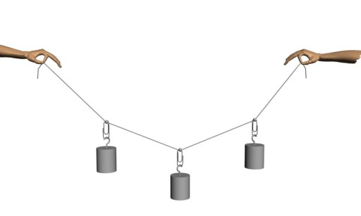

- Fig. 1
- Cablu obţinut prin împletirea mai multor fire.
|
- Fig. 2
- Pod suspendat.
|
- Fig. 3
- Atârnarea unui corp de mijlocul unui fir.
|
- Fig. 4
- Firul tensionat poate susţine corpul atârnat de mijlocul său!
|
- Fig. 5
- Micşorarea săgeţii şi mărirea deschiderii prin mărirea tensionării firului.
|
- Fig. 6
- Echilibrarea greutăţii corpurilor atârnate de forţele de tensiune care apar în fir.
|

- Fig. 7
- Atârnarea a trei corpuri în lungul firului.
|
- Fig. 8
- Atârnarea mai multor corpuri în lungul firului.
|

- Fig. 9
- Forţele se echilibrează: nodul rămâne pe loc.
|
- Fig. 10
- Curba lănţişorului.
|
- Fig. 11
- Fire de înaltă tensiune deformate de propria greutate.
|
- Fig. 12
- Atârnarea unei rigle de un fir prin intermediul unor tiranţi.
|